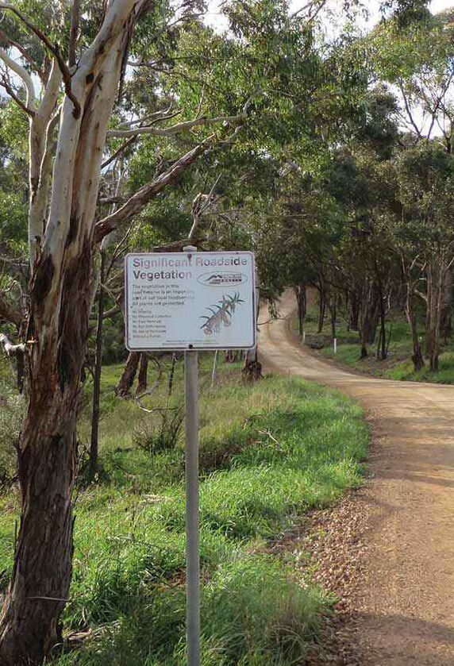
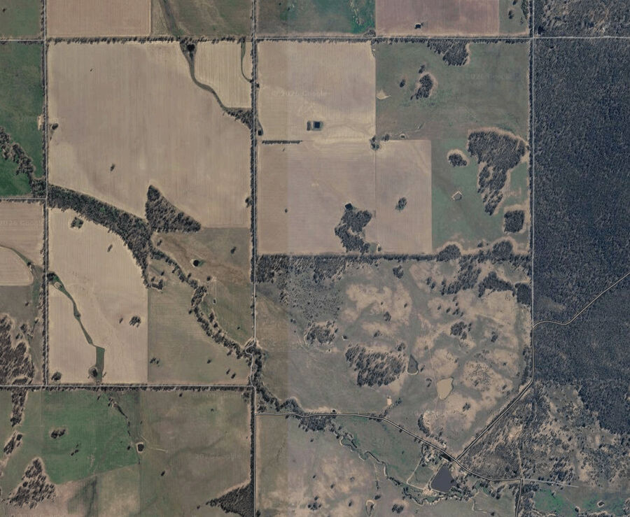
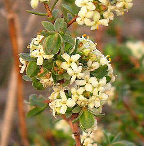
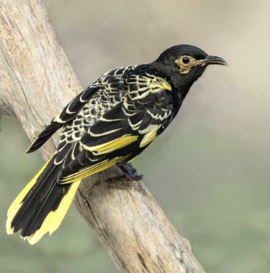
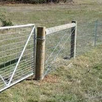
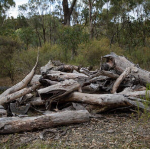
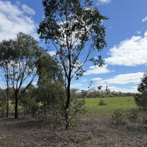
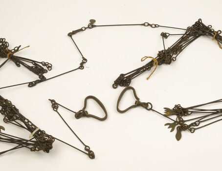

Much of our biodiversity is found in roadside corridors, especially precious remnant vegetation.

Large old trees provide valuable habitat including hollows for native wildlife.

Roadside vegetation acts as a corridor, connecting larger habitat patches.

Spiny Riceflower and other threatened flora can be found on roadsides.

25% of Victoria’s rare or threatened flora species and communities listed under the FFG Act occur on roadsides.

Keep livestock off sensitive roadside vegetation
Protect vegetation from weed invasion

Woody debris creates valuable habitat

Allow native seedlings to establish in paddocks
Have you ever wondered why some roadside reserves are much wider than others?
In 1620 English clergyman Edmund Gunter introduced the 100 link surveying chain, shown here. This chain was used across England and the British Empire.
The width of these road reserves typically varies from one chain (20.1 m) to three chains (60.3 m) depending on their original intended use. For example, stock routes were three chains wide.
